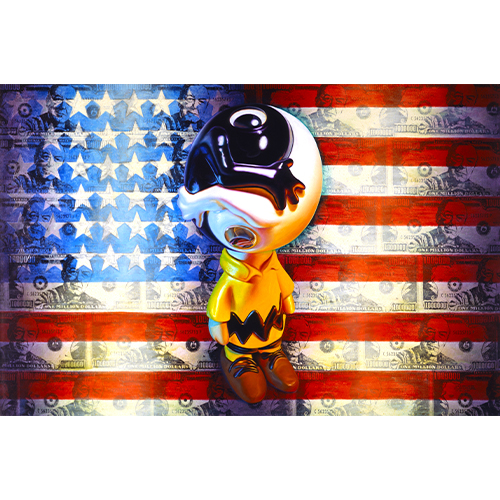

Literature
Ron English, Popaganda: The Art & Subversion of Ron English (San Francisco: Last Gasp, 2001), p. 99. ISBN 1-887128-60-3.
Notes
Dimensions are approximate; measurements used here are based on visual comparison and available documentation.
In PoPaganda, this work was erroneously reported as 38x624 inches.
This work references Charlie Brown from Peanuts.
This work also references Jasper John's Flag. A representative image is available here .
Reference model created by Ron English for this work.